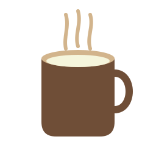

选择 2D 可编辑矢量图标生成，避免把任务简化成一次文生图调用。
文生图可以快速得到像素结果，但小图标需要可编辑、可检查、可复用，错误也要能定位到结构。
本项目把图标生成转化为 SVG 程序化图形任务，让多个 Agent 分工判断、选择、优化和修复。
每个关键节点都有状态、JSON 产物或 SVG 文件。Web UI 中同一张依赖图会显示 waiting / active / done / skipped / error。
LLM-backed Agent 负责目标、规划、生成、批评、选择、优化、验证和修复。本地工具只做可验证的 SVG 语法、安全、渲染和导出。
把主观 prompt 变成显式 objective、constraints 和 acceptance criteria。
从本地历史运行中提取成功模式、失败模式和用户反馈。
不是单次采样，生成多个可比较 SVG 草稿并留下评分证据。
语义 Critic 看是否像，SVG 质量 Critic 看是否安全、可编辑。
先分类根因，再决定 safety rebuild、semantic recomposition 或 minor patch。
Web UI 支持后验 optimizer feedback，不必重跑完整规划链。

输入 prompt 后，运行页面会实时显示 Agent 状态、候选 SVG、改写 prompt、生成目标、trace 和 gallery。
启动 Flask Web UI。
collaborative candidate count。
viewBox、标签、外链、颜色、安全。
核心输出目录：`generation_goal.json`、`memory_context.json`、`llm_trace.json`、`failure_taxonomy.json`、`repair_routes.json`、`gallery.html`。
姓名 / 学号待替换：架构、Agent、Web UI、实验报告、PPT。
GenPilot、Paper2Poster、PosterForest、SVG、OpenRouter、Pillow。
英文报告 PDF、PPT、代码链接；zip 标题按说明填写。